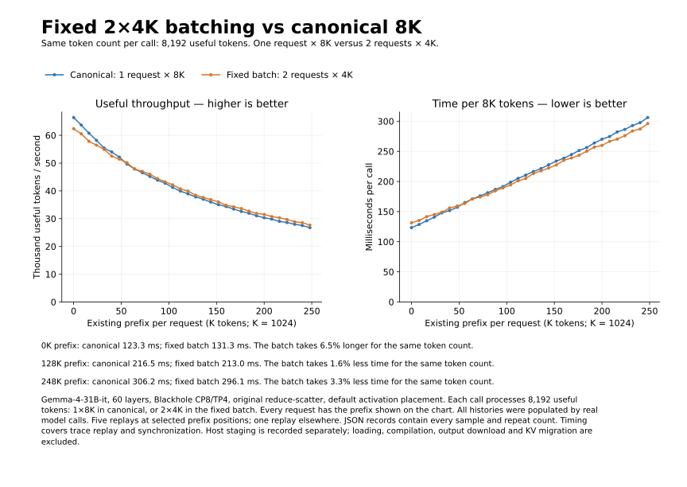
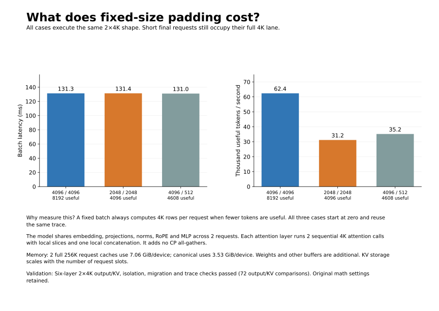
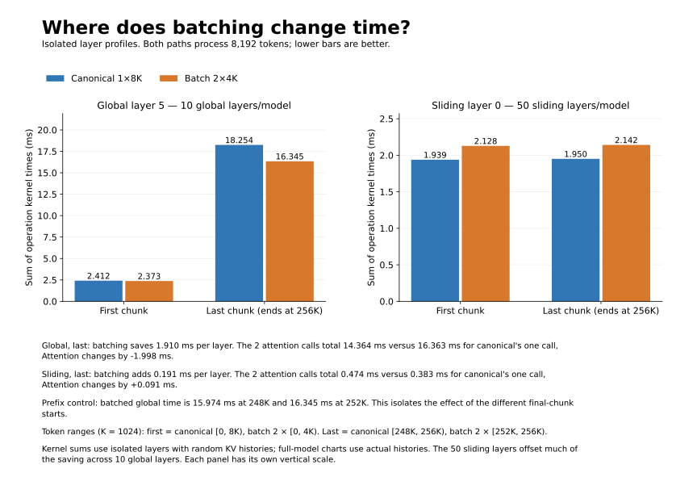
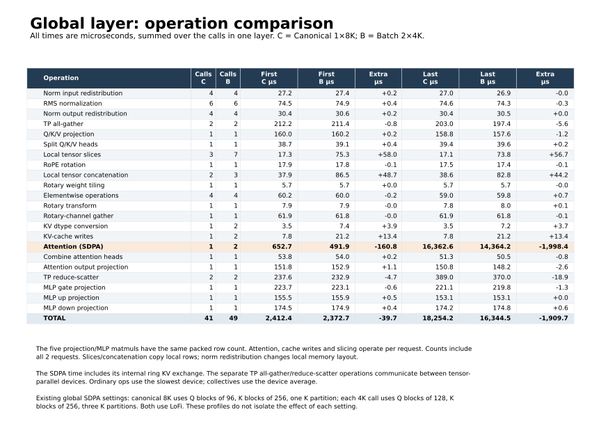
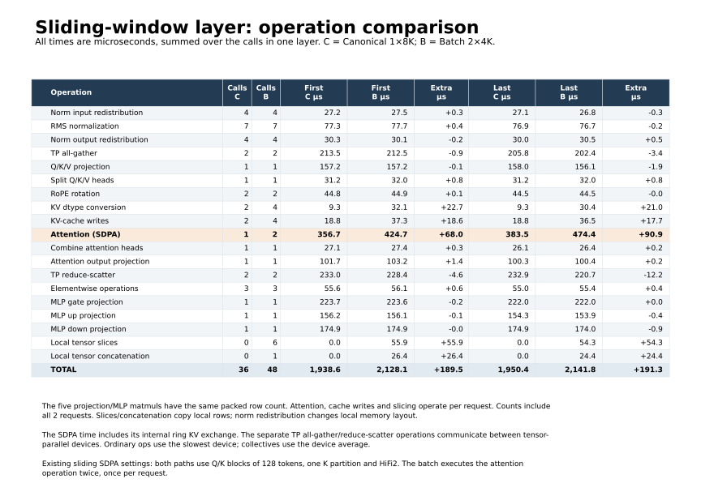
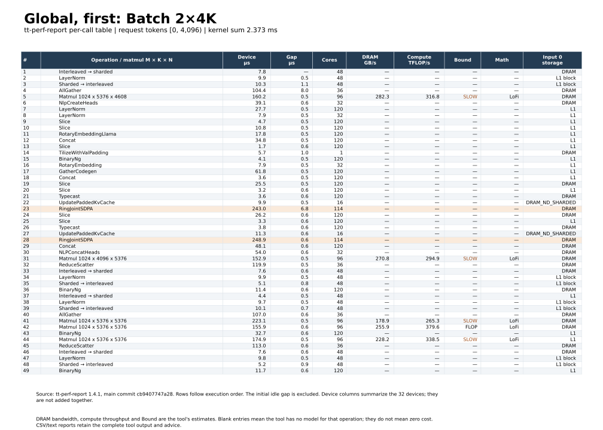
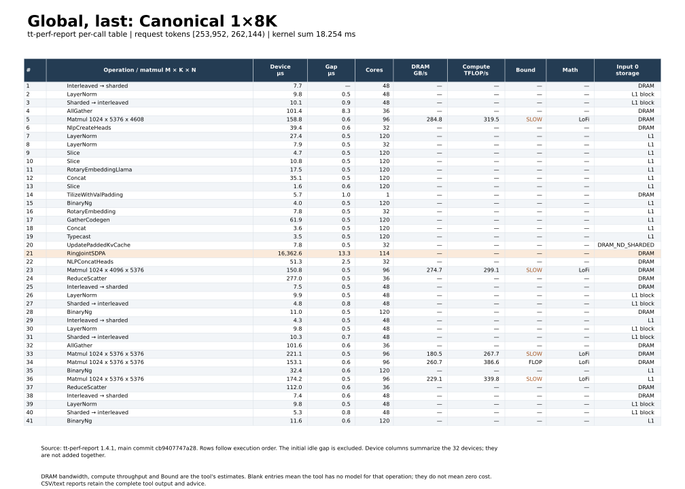
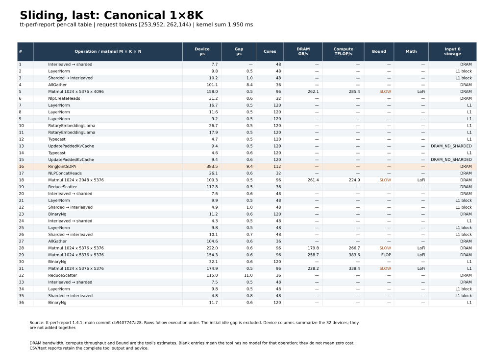
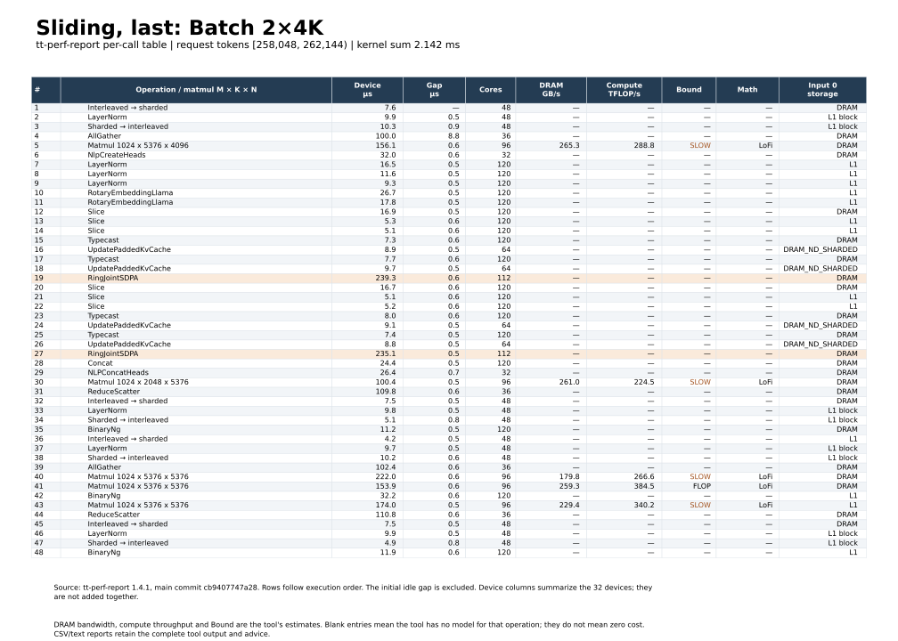

PDF · Comparison CSV · Method and validation · Reproduction commands
Layer profiles: Overview · Global operations · Sliding operations · Comparison CSV · All measurements









Gemma-4-31B-it, 60 layers, Blackhole CP8/TP4, original reduce-scatter, default activation placement. Each call processes 8,192 useful tokens: 1×8K in canonical, or 2×4K in the fixed batch. Every request has the prefix shown on the chart. All histories were populated by real model calls. Five replays at selected prefix positions; one replay elsewhere. JSON records contain every sample and repeat count. Timing covers trace replay and synchronization. Host staging is recorded separately; loading, compilation, output download and KV migration are excluded.
Raw runs: canonical, fixed batch.